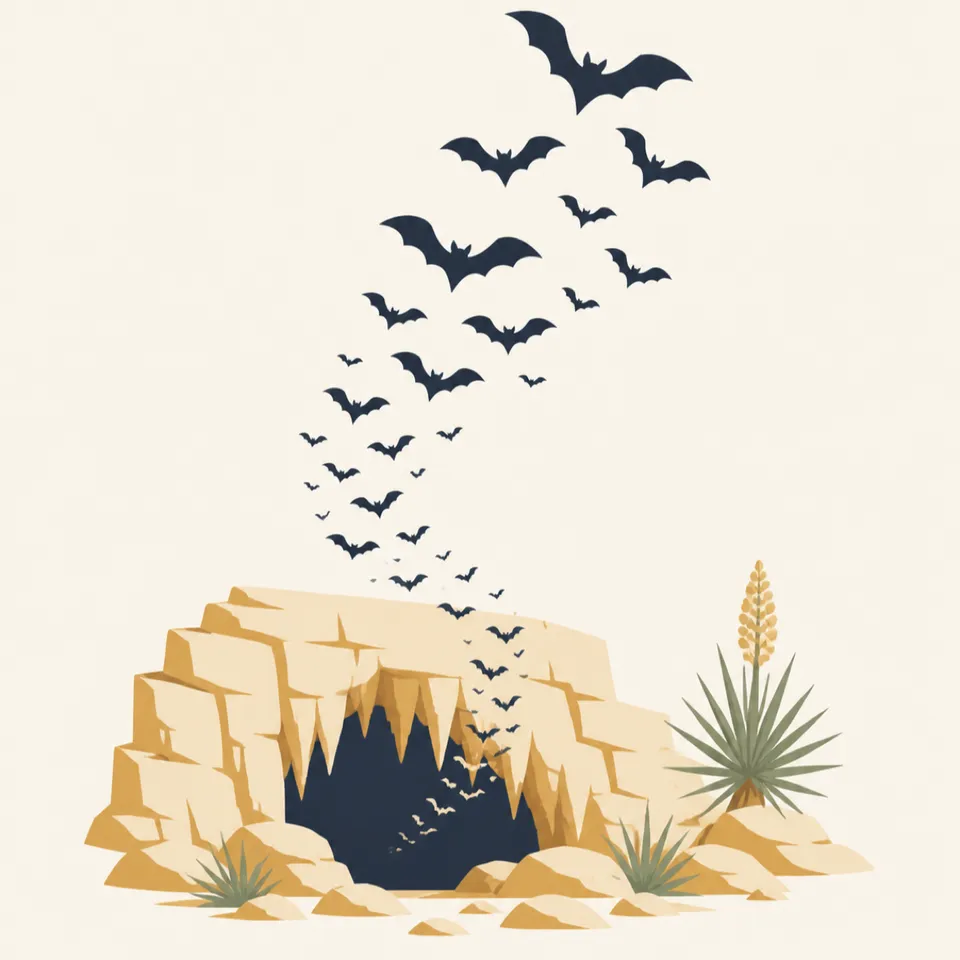
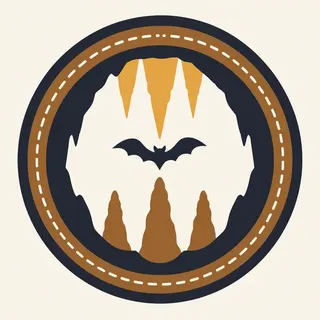

01
A Permian reef
An inland sea built the limestone about 265 million years ago. This cave is one of hundreds in that reef, not a singular accident.
TrailMark Archive Edition
New Mexico | Guadalupe reef
One of more than 300 caves in a fossil reef, opened to early visitors in a guano bucket.
Archive No. TM-CAVE-020
National Park since 1930
Collection Guadalupe Reef
Park Overview
Carlsbad Cave National Monument was created on October 25, 1923. Carlsbad Caverns National Park was created on May 14, 1930.
The cavern is one of more than 300 limestone caves in a fossil reef laid down by an inland sea about 265 million years ago. The desert above that reef is the Chihuahuan Desert, and the cultural record on the park's history page runs from cooking rings to a guano industry.
Twelve to fourteen thousand years ago, American Indians lived in the Guadalupe Mountains. Some cooking-ring sites and pictographs are inside the present park. Early visitors to the cave itself came down in an old guano-mining bucket.
Emotional Thesis
Photographs of the cave make it look discovered by light. The history is more industrial than that. People went in where miners had already cut a path for guano, riding the bucket.
TrailMark puts the decorated stone in the hero and the bucket in the essay. Both are the park. A cavern with no human approach is a different kind of story than this one.
Landscape Highlights
01
An inland sea built the limestone about 265 million years ago. This cave is one of hundreds in that reef, not a singular accident.
02
The hero painting follows a trail of lamps under drapery stone. The park's own history does not hand this essay a Big Room measurement, so the page does not invent one.
03
Above the cave is desert that people have used for a very long time. The cave is the famous room. The surface is why there are pictographs and ranch traces in the same park.
Wildlife
The history page describes a long human use of the Chihuahuan Desert and does not set a modern wildlife census in the paragraphs opened for this essay. The archive drawing is bats at a mouth of rock. Treat it as the mark, and use NPS for what currently flies at dusk.

01
Do not block a cave entrance for a picture. An entrance is habitat even when the tour uses a different door.
02
Pictographs and cooking rings on the surface are cultural resources. They are not props for a wildlife photograph.
03
The reef's fossil life is marine and Permian. It is not the bat, and it is not a dinosaur story.
Geology
About 265 million years ago an inland sea laid down the reef. The cave is a later hollow in that stone. Guadalupe Mountains National Park, next door in Texas, preserves more of the same reef above ground.
01
More than 300 caves are known in this reef. Carlsbad Cavern is the one with the trail and the bucket story, not the only void.
02
This page does not guess the length of the Big Room or the depth of the cave. Those figures need the park's own measurements, and they were not on the history page used here.
03
The desert surface and the cave climate are different places on the same walk. Dress for the room you will stand in, and check NPS for the current tour.
The underground temperature is the reason people tour in every month. The drive across the desert is the part that changes. Check the road.
A useful time to see the surface desert as more than a parking lot. The reef story is easier to believe if you have looked at the Guadalupe escarpment in daylight.
The Chihuahuan Desert above the cave is hot. The cave is not a substitute for water on the surface trails.
Clear light on the entrance country. Pair it with Guadalupe Mountains if you want the reef in daylight after the reef in the dark.
Photography
The cave photographs easily and lies easily. A formation without a trail or a person has no size. Include the built path when you can.
01
A lamp and a railing tell the truth about how large the room is. A cropped drapery could be a foot across.
02
Tour rules change. The Park Service page is the rule, not a blog from last year.
03
One frame of the desert you crossed keeps this from being only an underground studio.
Field Notes
The stone looks untouched until you remember the first public way in was a bucket built for guano.
TrailMark Field Notes

Badge Story
The badge should read as a cave, not as a canyon slot. A black opening under warm limestone is enough.
Desert rock around the mouth, the way the extra drawing frames it.
No bright teal water. This is not a spring park.
Distinct from a Utah arch and from a gypsum dune.
Archive No.020
LocationGuadalupe reef
ReleaseCavern Mark
Stewardship / Safety
Tours, elevators, and closures change. NPS is the only status that matters. The formations are slow and the oils on a hand are fast.
Stay on the paved route. Off-trail feet break formations and crust that do not grow back on a human calendar.
Do not touch the stone. The warning is old because the damage is cumulative.
Leave pictographs, cooking rings, and anything from the guano era where they are. The museum already holds about a million objects.
If you watch an entrance at dusk, you are in habitat. Follow the distance and light rules the park posts that day.
Current conditions, fees, and alerts are on the National Park Service site.
Continue the Archive
Guadalupe Mountains is the Texas side of this stone. White Sands is the gypsum basin to the west, a surface with no ceiling.